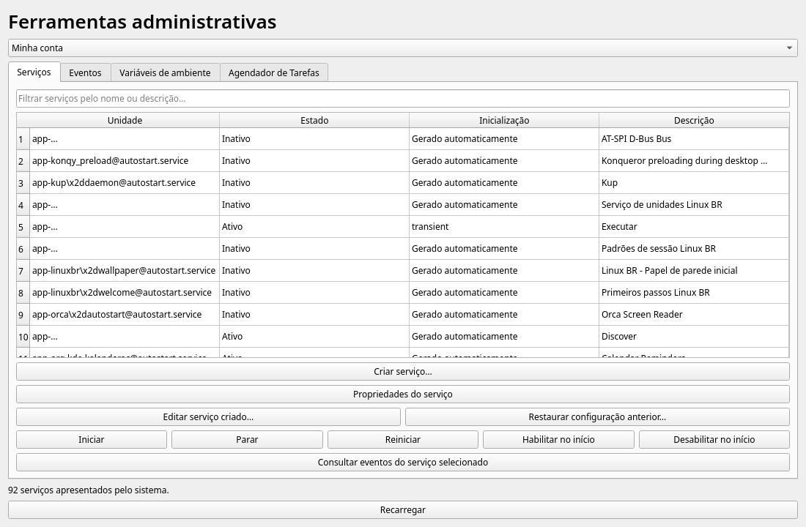
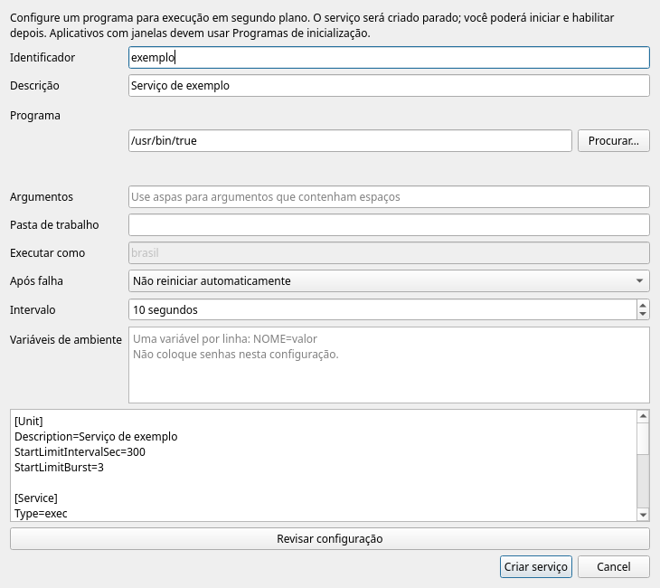

Procure Serviços no Iniciar. Selecione um serviço para ver o estado ou alterá-lo. Para criar um serviço, use o formulário da página e informe o comando a executar. Confira a unidade criada antes de habilitar a inicialização automática.

